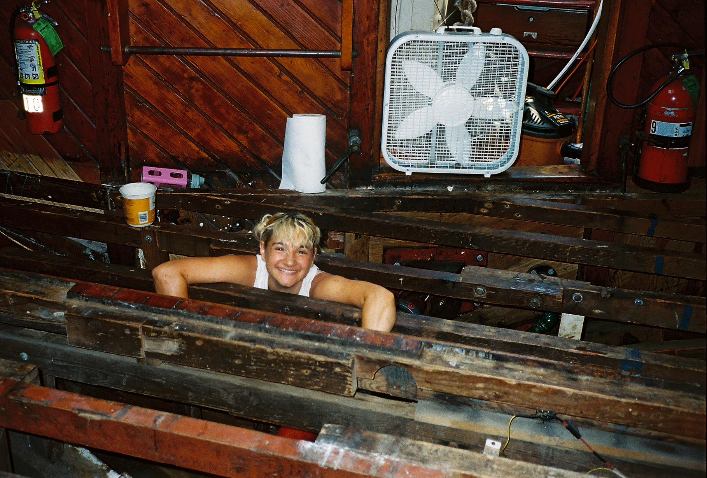
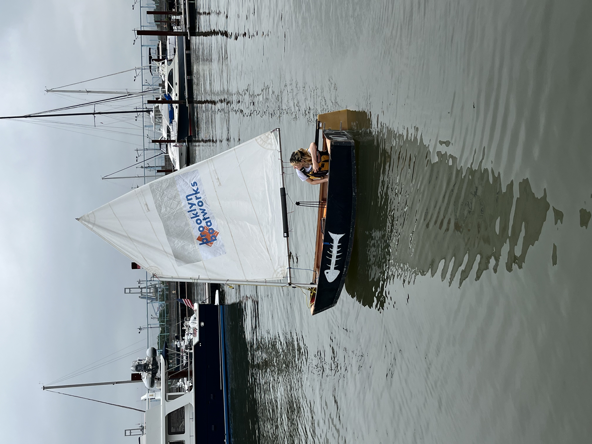
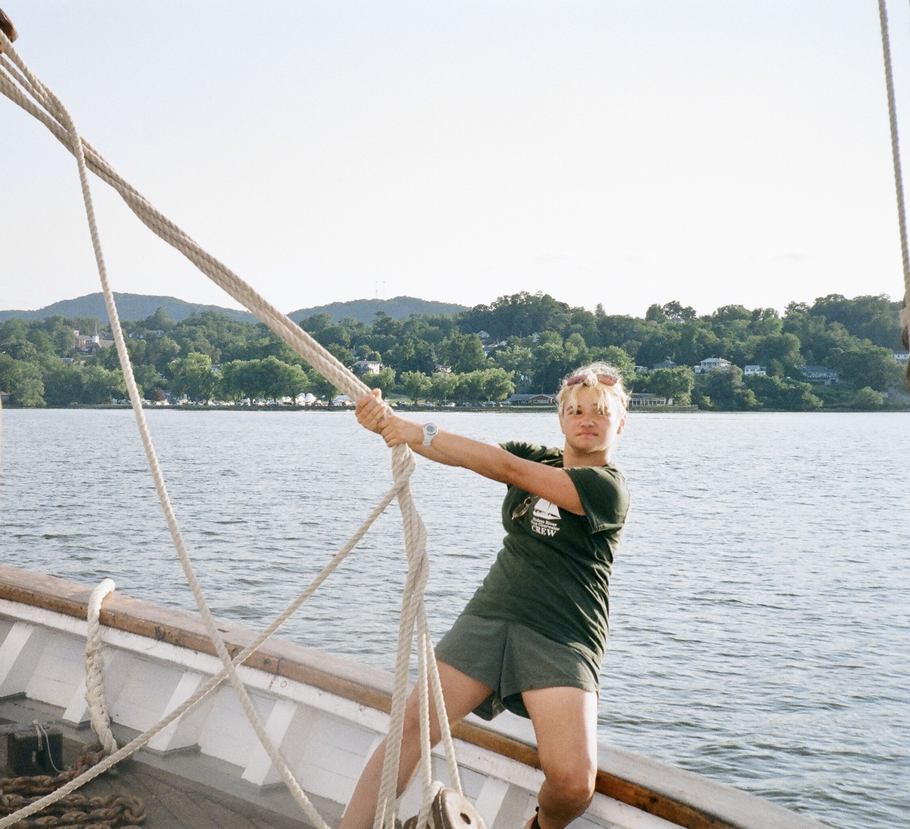
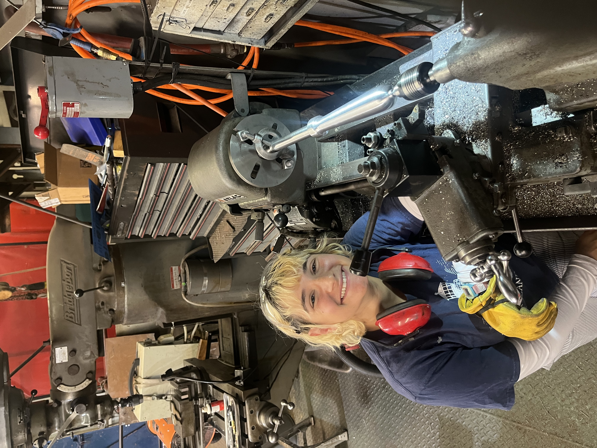

I have worked extensively on and around the water, and am passionate about waterfront history, access, and education.
As an instructor with Brooklyn Boatworks, I have taught the skill of traditional wooden boatbuilding to hundreds of Brooklyn middle schoolers, in addition to teaching further martitime skills both on and off the water, such as basic sailing, waterfront ecology, maritime history, weather prediction, and more.
As a deckhand with Classic Harbor Line, I work on board the schooner Adirondack and the motor-yacht Manhattan II off Chelsea Piers in New York City.
I spent the summer of 2026 on the Hudson River Sloop Clearwater, as a Sailing and Boatbuilding Trainee. I lived aboard and assisted with all aspects of Clearwater's sailing and educational endeavors, as well as helping to prepare for and begin a multi-month hull restoration process.
I currently volunteer with the South Street Seaport Museum, assisting with maintenance and restoration of the Tallship Wavertree.




If you are wondering why no photos from Classic Harbor Line are included on this page, I will provide you with a list of explanations from which you are welcome to take your pick: